随着这几年赴日外国人的大幅增加，日本境内各种关于外国人的负面新闻也层出不穷。
8月7日下午1点半刚过不久，在大阪市中央区心斋桥的心斋桥筋商店街的一家贵金属店内，一名男子持刀刺伤了 一名男店员，并抢走了手表。
周围群众见状立马拨打了报警电话，称“有人倒在了店中”。
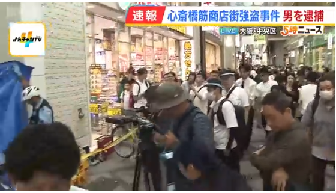
据说，一名操着一口流利中文的光头男子，在商店的里面进行商务会谈时，男子要求看一块豪华手表，当店员向他展示手表时，该男子突然拔刀相向，抢走了一块价值6280万日元的手表。
另一名30多岁的男店员见大事不妙，试图上前阻止他时，也被歹徒用刀刺伤了腹部，虽然该男店员被及时送往了医院，但他伤势严重，仍然昏迷不醒。
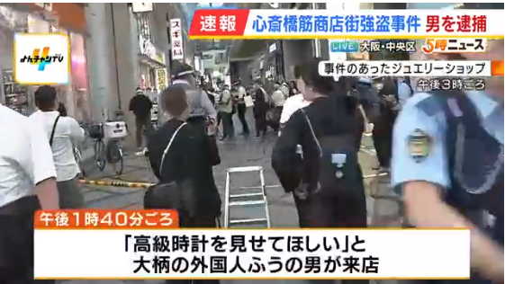
持刀伤人的男子顶着一个光头，身穿白色短袖衬衫和黑色短裤，身材魁梧，戴着墨镜，身高约170~175厘米。
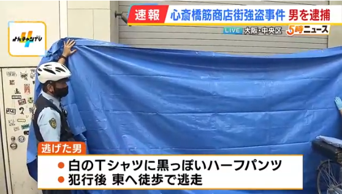
在抢劫并伤人后持刀逃跑，警方也将其作为一起抢劫杀人未遂案进行追查。
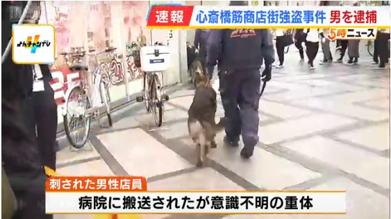
在场的两位女同伴表示，在事发前，她们曾与店内被刺伤的男店员交谈过，她们说，该男店员左侧腹部被刺伤，在痛苦地呻吟。 女生给了他一块手帕止血，当时店里大约有三名店员和不到十名顾客在现场。
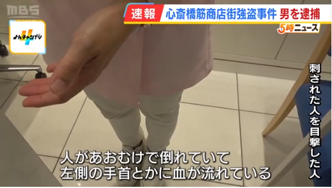
另一名目击男子说他看到一名男性逃跑，那人身材高大，手里应该拿着一把刀。穿着一件白色T恤，看起来像个亚裔外国人。
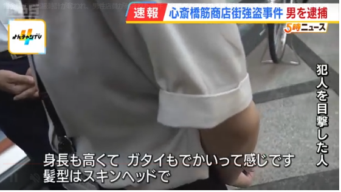
万幸的是，下午4点30分左右，该男子在关西国际机场被拘留并紧急逮捕。
面对在繁华闹市突发的这起恶性案件，日本的民众都非常的震惊。
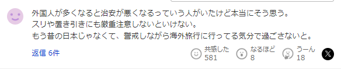
有人说，外国人越多就越不安全，我也是这么认为的。我们必须非常小心，以防扒窃和抢劫。现在已经不是以前的日本了，我们必须像在国外旅行一样，在日常生活中也得小心提高警惕。
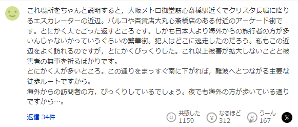
我来好好说明一下这个地里位置，抢劫发生的区域位于大阪地铁御堂筋心斋桥站附近，靠近通往クリスタ長堀的自动扶梯。它是Parco和大丸心斋桥百货公司附近的一个拱廊区域。总之，这里无论什么时候都是人山人海。在这样一个繁华地段，外国游客可能比日本人还多。不知道凶手逃到哪里去了。我经常来这里，但还是感到很惊讶会发生这样的事情。我只祈祷损失不会进一步扩大，受害者能够平安无事。总之，这里有很多人。我之所以会感到惊讶，是因为如果沿着这条街一直向南走，就是通往难波的主要步行路线。从国外来的游客一定也被吓到了吧。即使在晚上，这里也有很多国外游客在这条街上散步。
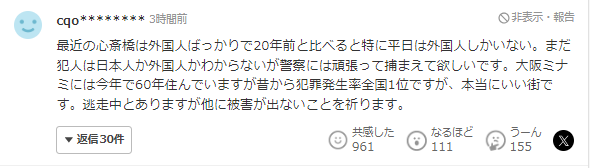
与20年前相比，现在心斋桥到处都是外国人，尤其是在工作日。我还不知道罪犯是日本人还是外国人，但我希望警方能尽全力抓住他们。今年是我在大阪南住的第60个年头，这里一直是全国犯罪率最高的地方，但它确实是个不错的城市。我希望凶手在逃时不要再造成其他的犯罪。
要知道，有数据显示，抢劫犯几乎都会被逮捕，逮捕率接近100%。他们根本无法逃脱，而且刑罚很重，因此这是一种无利可图的犯罪。
即使你很缺钱，最好也不要去抢劫，因为你会为此付出沉重的代价，轻则把牢底坐穿重则失去性命。
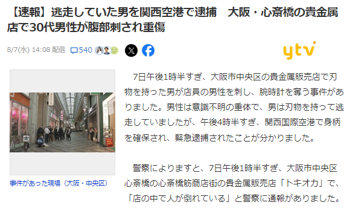
要知道，日本曾是全世界治安数一数二好的国家，不过这些年，随着恶行案件的增加，日本在世界上的治安指数也在恶化。2023年的全球世界各国治安排行榜中日本仅仅名列第9位。
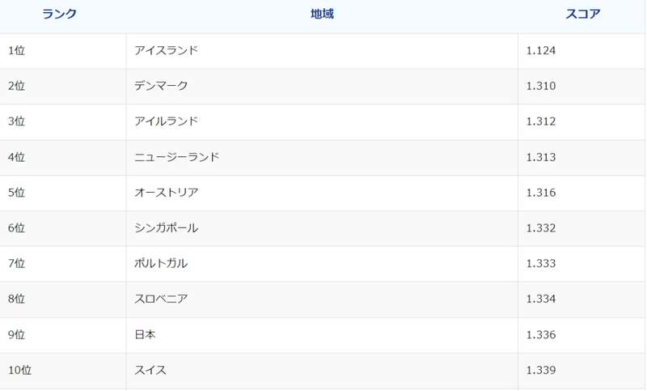
现在的日本已经到了这样一个必须小心自保的时代。即使是过去防抢措施很少的商店，如人流较多的商业街，今后也必须经常配备防刀用品，如防刀罩衫、防刀衬衫等保障人身安全。
对于来日本旅行的小伙伴们来说，也必须提高防范意识，注意自己随身的财务和人身安全，无论在何时何地都不要轻信陌生人。
毕竟这个世道，居安不思危，危矣！